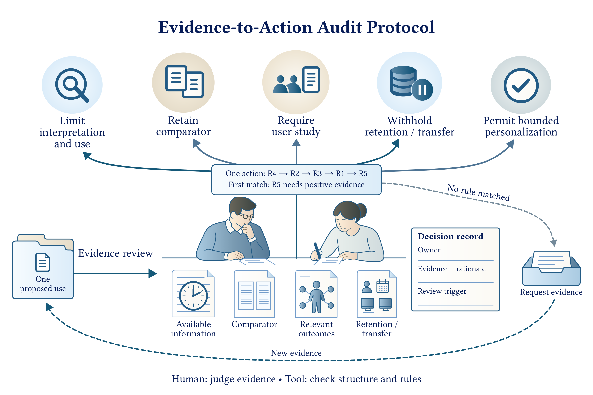

让个性化决策有据可依
PersonaGuard
从证据出发
让行动有据。
AI 系统何时可以进行个性化？审查证据支持什么、哪些环节还需验证，以及个人画像应在哪一步止步。
5 条公开规则4 个工作案例在浏览器本地运行
一次个性化审查MER-PS
记录对齐了，就更懂你了吗？报告时间差示意
参考报告个人报告
拟议用途→证据→下一步
案例个人时间校正
证据仅有代理指标改善
R3
先开展情境内用户研究已有判定 · 有符号时间校准案例
研究项目From Evidence to Action: Auditing Personalization Decisions in HCI Systems
01 / 研究问题
估计更准，就能据此行动吗？
在我们分析的 MER-PS 数据中，参与者观看视频，用摇杆报告愉快程度和激动程度。校正报告的时间差，可能改善测量指标；是否进行个性化、采集更多信息或保留画像，需要分别审查证据。
输入拟议用途 + 已有证据
输出下一步行动 + 理由 + 复审条件
参考曲线来自其他人的报告，不是这个人感受的标准答案。
02 / 方法
让每项决策的证据边界清晰可见。
完整方法 →
明确用途
明确行动、部署阶段，以及涉及的人群与情境。
匹配证据
审查适用范围、相对对照的收益、用户结果与后续复用依据。
记录下一步
按优先级应用五条规则，一并记录判定、理由与复审条件。
03 / 研究证据
检查规则，也审视证据边界。
全部结果 →可执行检查检验规则是否按设计运行；MER-PS 分析检验现有证据能支持什么。两者回答不同的问题。
100规则顺序重放
12 / 12无效变异被拒绝
30 / 30许可探针检查通过
04 / 交互体验
改一项证据，看看下一步为何改变。
有符号校准 · 原始记录
用什么方式评估？仅评估代理指标
观察到了什么用户结果？仅有近端测量指标
R3先开展情境内用户研究
已有案例预览；打开演示即可修改证据条件。
浏览器本地演示
同一套规则，看得见的理由。
从已有案例出发，修改证据条件，查看哪条规则决定结果。所有输入留在当前设备。
- 重放原始条件与假设条件
- 查看规则优先级与判定理由
- 将本次结果下载为 JSON
05 / 继续探索